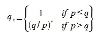
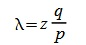
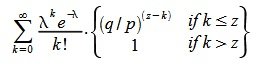
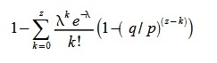
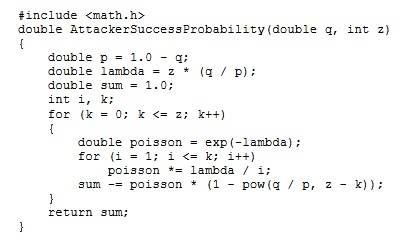
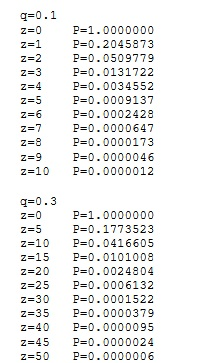
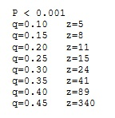

11. Оценка
Рассмотрим сценарий, в котором злоумышленник пытается генерировать более
длинную цепь блоков, чем честные участники. Даже если он преуспеет, это не
приведет к тому, что можно будет создавать деньги из воздуха, присваивать себе
чужие монеты или вносить иные произвольные изменения. Узлы никогда не примут
некорректную транзакцию или блок, ее содержащий. Атакующий может лишь
пытаться изменить одну из своих транзакций, чтобы возвратить себе деньги.
Гонку между честными участниками и нападающим можно представить
как биномиальное случайное блуждание. Успешное событие, когда «хорошая» цепь
удлиняется на один блок, приводит к увеличению отрыва на единицу, а неуспешное,
когда очередной блок создает злоумышленник, — к его сокращению. Вероятность
атакующего наверстать разницу в несколько блоков такая же, как и в задаче о
«разорении игрока». Представим, что игрок имеет неограниченный кредит, начинает
с некоторым дефицитом и у него есть бесконечно много попыток, чтобы отыграться.
Вероятность того, что он преуспеет, как и вероятность злоумышленника догнать
честых участников, вычисляется следующим образом:
p = вероятность появления блока в честной цепочке
q = вероятность того, что блок создаст атакующий
qz = вероятность того, что атакующий наверстает разницу в z блоков

В случае p > q вероятность уменьшается экспоненциально с ростом числа блоков, на
которое отстает злоумышленник. Поскольку все ставки против него, без удачного
рывка вначале его шансы на успех становятся ничтожно малы. Рассмотрим теперь,
как долго получателю платежа стоит ждать, прежде чем он будет полностью уверен,
что бывший владелец не сможет отменить транзакцию. Мы предполагаем,
что злоумышленник-отправитель позволяет адресату некоторое время верить,
что платеж был проведен, после чего возвращает деньги себе. Получатель узнает об
этом, но мошенник надеется, что будет уже слишком поздно. Адресат создает новую
пару ключей и сообщает свой публичный ключ отправителю прямо перед
подписанием транзакции. Это не позволит отправителю заранее
начать работать над цепочкой и провести транзакцию в тот момент, когда он будет
достаточно удачлив, чтобы совершить рывок вперед. После отправки платежа
мошенник начинает втайне работать над параллельной версией цепочки,
содержащей альтернативную транзакцию. Получатель ждет, пока транзакция не
будет добавлена в блок и пока тот не будетп родолжен еще z блоками. Ему
неизвестен прогресс злоумышленника, но если средняя скорость генерации честных
блоков — известная величина, то число блоков нападающего подчиняется
распределению Пуассона с математическим ожиданием:

Чтобы получить вероятность того, что атакующий обгонит честных
участников, мы умножаем значение случайной величины (число созданных им
блоков) на вероятностьтого, что он сможет наверстать оставшуюся разницу:

Перегруппировав слагаемые и избавясь от бесконечного ряда, получаем:

Код программы на языке Си выглядит так:

Запустив программу, мы видим, что вероятность экспоненциально падает с ростом z:

Решая относительно P < 0.1%, получаем:
